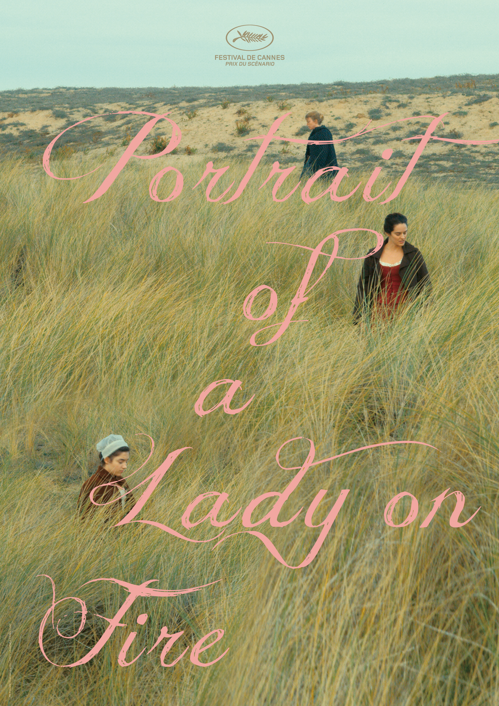

18세기 말. 젊은 화가 마리안은 그림 수업을 하고 있다. 학생 한 명이 마리안의 그림 한 점을 보고 무엇이냐고 묻자, 마리안은 '타오르는 여인의 초상'이라고 말해준다. 몇 년 전, 마리안은 초상화 의뢰를 받고 브르타뉴의 외딴 섬의 고택에 머무르게 되었다. 의뢰주는 엘로이즈라는 젊은 귀족 여자로, 밀라노의 귀족 남자와의 결혼을 앞두고 초상화를 그려야 했다. 그런데 여자는 사실 결혼을 원치 않았기 때문에 화가들을 거부하고 있었다. 그래서 그녀의 어머니인 부인은 마리안에게 화가임을 밝히지 말고 산책 친구인 척해달라고 당부했다. 마리안은 엘로이즈와 산책을 하면서 그녀의 모습을 외운다.
그림이 완성되지만, 엘로이즈에 대한 죄책감 때문에 마리안은 그림의 얼굴을 지워버린다. 부인은 이를 보고 마리안을 질책한다. 그런데 놀랍게도 엘로이즈는 마리안을 옹호하면서 포즈를 취하기 시작한다. 부인은 자기가 돌아오기 전까지 그림을 완성하라고 하며 이탈리아로 떠난다.
마리안은 엘로이즈와, 하녀 소피와 함께 지내면서 자매처럼 친근해진다. 어느 날 밤 엘로이즈는 오르페우스와 에우리디케 이야기를 읽으면서, 오르페우스가 마지막에 뒤를 돌아본 이유를 토론한다. 소피가 임신을 하고 낙태를 결심했을 때 둘은 소피를 시술사에게 데려갔다. 마을 여인들의 캠프 파이어 모임에 참석했을 때, 엘로이즈의 드레스에 불길이 옮겨 붙는 바람에 엘로이즈가 쓰러지는 사건이 일어나는데, 후일의 '타오르는 여인의 초상'의 모티브가 된다. 마리안은 밤중에 복도를 거닐면서 하얀 웨딩드레스를 입은 엘로이즈의 환상을 보기 시작한다. 이윽고 둘은 산책을 하면서 동굴 속에서 처음으로 키스를 나누고, 그날 밤 소피가 잠자리에 들면 열정적으로 사랑을 나누었다. 시간이 흐름에 따라 애정도 강해진다.
부인이 이탈리아에서 돌아오면서 로맨스는 일순간에 끝나버린다. 두 사람은 슬픔을 머금고 이별을 고하면서, 서로를 잊지 않기 위해 상대방의 그림을 그려준다. 마리안이 눈길 주지 않고 성을 나가려 하자, 엘로이즈가 '뒤를 돌아보라'고 외친다. 마리안은 고개를 돌려 엘로이즈를 바라본 뒤 떠난다.
이후로 마리안은 엘로이즈를 두 번 더 볼 수 있었다. 한 번은 전시회에서 엘로이즈가 그린 그림을 통해서, 다른 한 번은 음악회에서 비발디의 〈여름〉을 들으며 감정에 벅찬 모습을 먼 발치에서나마 보았던 것이었다.
Posters
